Beer color to mash pH (v2.0)
This article outlines the derivation of formulas that can be used to predict grist pH (and with it mash pH) based on the estimated beer color. It utilizes a correlation that exist between a malt's color and its pH properties. While this correlation is rather loose for base malts, it is sufficiently strong for specialty malts to allow the proposal of formulas that can predict the grist and mash pH from the beer's color.
When I talk about grist pH I mean the pH that is "inherent" to the grist and which can be measured when distilled (mineral free water) is used for mashing.
This article is rather heavy on math and formulas it is provided as a reference for brewers who want to know how mash pH and beer color can be connected on a mathematical level.
The resulting formula has been implemented in Kaiser_water_calculator_US_units.xls and Kaiser_water_calculator.xls
How mash pH and beer color use similar formulas
To estimate the grist (or distilled water mash) pH the following formula can be used:
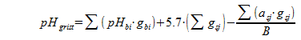{kind=link}
where
- pHgrist: is the distilled water mash pH of the resulting grist
- pHbi: is the distilled water mash pH of the base malt i
- gbi: is the base malt i's portion of the grist (gbi = 0..1)
- gsj: is the specialty malt j's portion of the grist (gbj = 0..1)
- asj: is the specialty malt j's specific acidity in mEq/kg
- B: is the pH buffer capacity of the malt. It is actually the weighted average of the buffer capacities of all the malts present in the grist, but that can be safely neglected here. It has a unit of mEq/(kg*pH) or mEq/(lb*pH)
This formula is a revised version of the formula given in "The effect of brewing water and grist composition on the pH of the mash" [1]. It simply does the following: The weighted average of the base malt pH and the titration end-point (5.7) of the specialty malts is calculated and used as a starting pH. Then the pH shift that stems from specialty malts is subtracted. This pH shift is proportional to the total acidity of the specialty malts. The proportionality factor is the pH buffer capacity B.
Most home brewing software calculates SRM as follows
(2)where MCU means Malt Color Units. It is the MCU formula that shows striking similarity to the pH formula (1) when written like this:
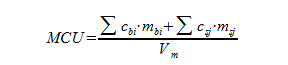 (3)where
- MCU: are Malt Color Units
- mbi: is the weight of base malt i in pound
- cbi: is the color of the base malt i in Lovibond
- msj: is the weight if the specialty malt j in pound
- csj: is the color of the specialty malt j in Lovibond
- Vw: is the produced volume of wort
The goal is to express the SUM(asj * gsj)/B term from (1) with the SUM(csj * msj) / Vw term from (3). This is easy for the crystal and lightly roasted specialty malts where the following relationship between color and acidity has been found [1]:
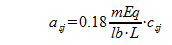 (4)In addition to that, gsj needs to be expressed as the ratio between the individual grain weight (msj) and the total grist weight
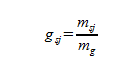 (5)Where mg is the weight of the grist in pound.
Using (4) and (5) to express asj and gsj in (1) gives:
 (6)
(6) To continue working with (6) and (3) the assumption is made that the grist consists of light colored base malts and the majority of the color is coming from specialty malts. That base malt is assumed to have a pH of 5.7. This changes (6) to
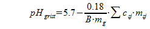 (7)and with the assumption that an average 5 gal batch uses 10 lb grain (mbi) with a color rating of about 2 Lovibond (cbi) (3) changes to
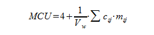 (8)Those assumptions will later become moot since they ended up in the "4 +" term in (8), which will later be dropped in favor values derived from practical brewing observations.
Combination of (7) and (8) gives an equation that estimates the grist pH based on the beer's MCU.
 (9)
(9) Through linear regression analysis a linear approximation can be found for the relationship between SRM and MCU
(10)Used in (9) we get
 (11)
(11) This formula is useful when the grist weight and cast out volume are known, which strongly correlates to the original gravity of the beer. However it is not all that useful when the grist contains roasted malts since (4) made the assumption that there is a linear relationship between malt acidity and its color. This relationship only exists for crystal malts and lightly roasted malts [2].
grists with roasted malts
Let's assume that the color of the beer can be split into a color component from crystal, base and lighly roasted malts and a color component from strongly roasted malts. The percentage of color from roasted malts is called Pr and therefore
To get the pH change from roasted malts into the pH formula we need to write (4) for roasted malts. To further simplify things we assume that there is only one type of roasted used, which has the color cr. The acidity for heavily roasted malts is independent of their color and was found to be around 40 mEq/kg or 18 mEq/lb. The factor of cr/cr, that is also applied, brings the malt's color into the equation even though it doesn't make a difference yet.
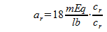 (13)The MCU contribution from that roasted malt is
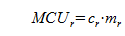 (14)The general mash pH drop from roasted malts is
 (15a)
(15a) With (13) and (14) it changes to
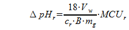 (15b)Thus (9) can be enhanced to
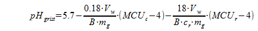 (16)Some rearranging gives
 (17)
(17) (17) Is as far as the analytical approach makes sense. Now it is best to take a closer look at the terms and identify what they are, mean and, most importantly, how they relate to practical observations.
Term 1 represents the grist pH of a color less beer. Term 2 is a factor that depends on the strength of the beer (the inverse, mg/Vw, is proportional to the starting extract content or original gravity of the beer). Term 3 is the color dependent pH drop for color contributed by crystal, base and lightly roasted malts. It uses MCU, but the relationship between MCU and SRM can be approximated using (10). Term 4 represents the pH drop from roasted malts. Note that it depends both on the color increase gained from roasted malts and the color of the roasted malt. This is to be expected since the acidity of roasted malts doesn't change with the malt color and darker roasted malts provide less acidity per color that lighter roasted malts.
Theory and Practice
While (17) can be used to predict the grist pH and with it mash pH, better correlation to actual mash pH observations is achieved by using the structure and some of the results of (17) and augmenting them with parameters derived from brewing practice.
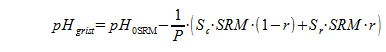 (18)Where
- pH0SMR: is the pH that the grist for a beer with a color of 0 SRM would have. That beer doesn't exist, but the value can be derived from extrapolation.
- P: is the original extract of the beer in Plato
- Sc: the pH over SRM slope for crystal, base and lightly roasted malts
- Sc: the pH over SRM slope for roasted malts
- r: the ratio of color gained from roasted malts over the total color of the beer.
- SRM: is the beer color measured in SRM
As noted earlier, term 2 from (17) related to the beer's original extract (or gravity) and with the assumption of 80% grain extract potential, 80% efficiency into the kettle and that the wort volume in liters is the same as the wort weight in kg (this assumption is close enough for these calculations) we find:
 (19)
(19) The factor 7.68 will be absorbed into Sc and Sr, respectively.
Using all of the above Sc resolves to
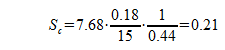 (20)Where 7.78 is from (19), 0.18 is the acidity per color from (4), 15 is the buffer capacity of the malt which is assumed to be 35 mEq/(kg*pH) or 15 mEq/(lb*pH), 0.44 is approximation between MCU and SRM from (10).
Sr resolves to
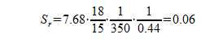 (21)Where 18 is the specific acidity of roasted malt (18 mEq/lb) and 350 is the assumed color of the roasted malt in Lovibond.
Through correlation with pH measurements on various different mashes it was found that pH0SMR = 5.6 gave the best correlation between the grist pH predicted by the formula and the actual measured pH. It is lower than the 5.7 that was assumed initially. This is a result of the non-linearity of the MCU to SRM equation for low MCU values. Hence (18) can be written as
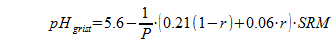 (22)(22) means that for a 12 Plato (1048 SG) beer a beer color increase of 10 SRM, gained from crystal malts, drops the grist pH, and with it the mash ph, by ~0.18 pH units. If the color increase of 10 SRM was due to 350 L roasted malt, the associated pH drop is only ~0.05.
From grist pH to mash pH
Determining mash pH from the grist pH is comparatively easy if the residual alkalinity (RA) of the water is known
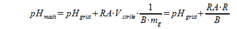 (23)Where
- pHmash: mash pH
- RA: residual alkalinity in ppm CaCO3
- Vstrike: the strike water volume in liters
- B: the pH buffer capacity of the malt in mEq/(kg*pH)
- mg: the grist weight in kg
- R: mash thickness in l/kg (R = Vstrike/mg)
Written for US units and after resolving the constants including the pH buffer capacity, for which 35 mEq/(kg*pH) is assumed, (23) looks like this
Vstrike is given in gal, mg is given in lb and R is given in qt/lb.
If acids are added to the mash that were not included in the residual alkalinity used in (23) or (24), an additional pH shift can be calculated as
Where
- A: the amount of acid in mEq
- B: the pH buffer capacity of the malt in mEq/(kg*pH)
- mg: the grist weight in kg
References
- ↑ 1.0 1.1 Kai Troester, The effect of brewing water and grist composition on the pH of the mash, 2009
- ↑ Kai Troester, Mash pH: Beer Color and Grist Acidity Zymurgy September/October 2011